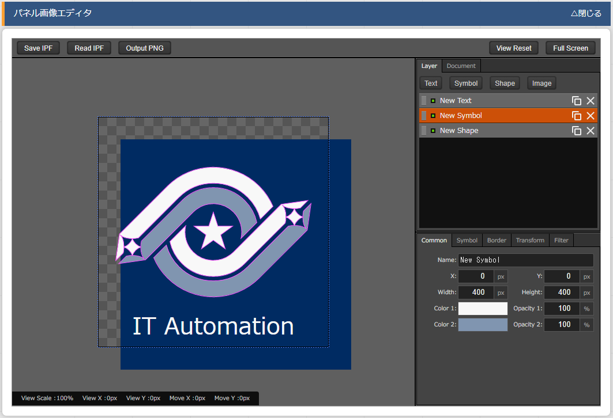

管理コンソール¶
はじめに¶
ITAシステム 管理コンソールの概要¶
ITA管理コンソールについて¶
No. |
メニューグループ |
メニュー・画面 |
|---|---|---|
1 |
共通部 |
ログイン画面 |
2 |
ワークスペース切替 |
|
3 |
ロール一覧 |
|
5 |
バージョン確認 |
|
4 |
ITA管理コンソール |
メインメニュー |
5 |
システム設定 |
|
6 |
メニューグループ管理 |
|
7 |
メニュー管理 |
|
8 |
ロール・メニュー紐付管理 |
画面説明 ログイン画面、ログイン情報¶
ログイン¶
ワークスペース切替¶
ロール一覧¶
バージョン確認¶
ログアウト¶

画面説明 メインメニュー¶
画面構成¶

画面説明 基本画面構成¶

画面構成¶
No. |
画面名 |
説明 |
|---|---|---|
1 |
メニュー名 |
現在表示しているメニュー名が表示されます。 |
2 |
メニュー |
操作/表示可能なメニューグループがリストとして表示されます。また、現在のメニューグループで、操作/表示可能なメニューがリストとして表示されます。 |
3 |
サブメニュー |
各メニューに対応する登録、設定などを行う部分です。※詳細は後述します。 |
4 |
ログイン情報 |
現在ログインしているアカウント名が表示されます。 クリックすると、ワークスペースの切替処理や所属しているロールの確認、インストールされているITAとドライバのバージョン確認、ログアウト処理操作が可能です。 |
一覧タブ¶
- 登録各メニューに対して、新規に項目を登録します。登録内容は各メニューによって異なりますので、各利用手順マニュアルを参照して下さい。エクセル形式、JSON形式のファイルを使用する一括登録については「全件ダウンロード・ファイル一括登録」をご確認下さい。

「一覧」タブ内上部の 登録 をクリックして登録/編集画面に遷移します。
必要な情報を入力し、「一覧」タブ内上部の 編集確認 をクリックすると編集確認画面が表示されます。
編集反映 をクリックして更新します。
注釈
登録時のボタンについて- 追加新規登録用のレコードが追加されます。複数件を同時に登録したい場合に使用します。
- 削除チェックを付けたレコードが削除されます。
注釈
プルダウンによる入力項目について登録/更新時の入力項目で、プルダウンによる選択が可能な項目は、以下の仕様となっています。
- 検索窓が表示されます。検索したい語句を入力することにより、選択項目を絞り込むことが出来ます。部分一致検索で、大文字と小文字、全角と半角は補正検索されます。
- 選択項目が表示されます。
- 表示フィルタ各メニューで登録されている項目を表示するための検索条件を指定します。検索条件、検索項目はメニューごとに異なります。ここでは共通機能について説明します。「一覧」タブ内右上の フィルタ|開く/閉じる をクリックすることで表示／非表示の切替が可能です。

- 廃止カラム初期状態では、「廃止含まず」がセットされています。他に「全レコード」、「廃止のみ」が任意操作で選択可能であり、希望表示方法を指定します。必ずいずれかの選択が必須です。
- 検索条件検索する条件を指定します。システム名や備考などにおいて、文字指定が出来る項目については「あいまい検索」or「プルダウン検索」でフィルタすることが出来ます。
- オートフィルタオートフィルタをチェックしておくと、フィルタ条件を選択するごとに条件に合った一覧を自動で表示します。画面表示時のチェック有無は、管理コンソール「メニュー管理」の「オートフィルタチェック」で設定可能です。
- カラム説明 (Description)カーソルを合わせると該当する列の説明文がポップアップ表示されます。
- フィルタ検索条件を手入力およびプルダウンメニューから選択し、Enterキーまたはフィルタをクリックすると登録情報が表示されます。
- Excelダウンロード検索条件に一致した項目の一覧をエクセル形式でダウンロード出来ます。
- JSONダウンロード検索条件に一致した項目の一覧をJSON形式でダウンロード出来ます。
注釈
表示フィルタからダウンロードしたExcel形式ファイルとJSON形式ファイルは「全件ダウンロード・ファイル一括登録」で使用することが出来ます。 - 編集登録されている項目の更新を行います。編集内容は各メニューによって異なりますので、各利用手順マニュアルを参照して下さい。

- 対象項目の … > 編集 を順にクリックして登録/編集画面に遷移します。もしくは、対象項目にチェックを入れ、「一覧」タブ内上部の 編集 をクリックします。チェックを入れずに「一覧」タブ内上部の 編集 をクリックすると表示されているすべての項目が編集対象となります。
- 更新する情報を入力し、「一覧」タブ内上部の 編集確認 をクリックすると編集確認画面が表示されます。
- 編集反映 をクリックして更新します。
注釈
編集時のボタンについて- 追加新規登録用のレコードが追加されます。複数件を同時に登録したい場合に使用します。
- 削除チェックを付けたレコードが削除されます。
- 廃止チェックを付けたレコードの廃止フラグがTrueになります。更新後に廃止となります。


- 複製登録されている項目の情報を転用して登録することが可能です。
- 対象項目の … > 複製 を順にクリックして登録/編集画面に遷移します。もしくは、対象項目にチェックを入れ、「一覧」タブ内上部の 編集 をクリックします。登録/編集画面に遷移したら 複製 をクリックします。
- 対象項目の値を反映した状態の新規登録用レコードが表示されます。
 {{#2:sensitive設定について、下記の「Ansible-LegacyRole」の代入値管理メニューのほかにsensitive設定が登録編集出来るメニューはあるでしょうか。}}
{{#2:sensitive設定について、下記の「Ansible-LegacyRole」の代入値管理メニューのほかにsensitive設定が登録編集出来るメニューはあるでしょうか。}}警告
- 対象項目がパスワード項目の場合、複製処理は行われません。
- Ansible-LegacyRoleメニューグループ＞代入値管理メニューのように、Sensitive設定が存在する項目に関しては、Sensitive設定が「OFF」の場合のみ複製処理を行います。

変更履歴タブ¶
- 変更履歴の確認
- 各メニューの主キーを指定することで、対応する項目の変更履歴を表示することが出来ます。もしくは、「一覧」タブの対象項目の … > 履歴 を順にクリックすると変更履歴を表示することが出来ます。
- 変更実施日時が新しい順に一覧表示され、前回との変更箇所がオレンジ色太文字で表示されます。

- プルダウン選択を含んだ場合の変更履歴について「プルダウン選択」の参照元を変更した場合、参照側の値も自動的に変更されます。「変更履歴」は、値を編集（登録/更新/廃止/復活）した時点の値が表示されます。以下、例を用いて説明します。例：パラメータシート「ぱらむ001」の項目「ぱらむB」が「マスタ001」の項目「マスタ」を参照している場合
- 事前準備として、メニュー作成メニューグループ>メニュー定義・作成メニューで以下のデータシートとパラメータシートを作成します。
- 入力用メニューグループ>マスタ001メニューからパラメータ「マスタ」に値「mas1-1」を登録します。
- 入力用メニューグループ>ぱらむ001メニューから1件登録します。
- 入力用メニューグループ>マスタ001メニューからパラメータ「マスタ」の値を編集し「mas1-2」で更新を行います。
- 入力用メニューグループ>マスタ001メニューからパラメータ「マスタ」の値を編集し「mas1-3」で更新を行います。
- 入力用メニューグループ>ぱらむ001メニューから先ほど登録した対象の「ぱらむA」を編集し、更新を行います。

- 入力用メニューグループ>マスタ001メニューからパラメータ「マスタ」の値を編集し「mas1-4」で更新を行います。
- 入力用メニューグループ>マスタ001メニューからパラメータ「マスタ」の値を編集し「mas1-5」で更新を行います。
- 入力用メニューグループ>ぱらむ001メニューから先ほど登録した対象の「ぱらむA」を編集し、更新を行います。
- 以下のような結果になります。

データシート「マスタ001」の変更履歴¶

パラメータシート「ぱらむ001」の変更履歴¶


全件ダウンロード・ファイル一括登録¶

- ファイルによる一括登録/更新
- 目的に合ったファイルをダウンロードします。
- 登録されている情報の更新/廃止/復活を行う場合は 全ダウンロード(Excel) または 全ダウンロード(JSON) をクリックし、ファイルをダウンロードして下さい。
- 新規に登録を行う場合は 新規登録用ダウンロード(Excel) をクリックしてファイルをダウンロードして下さい。
- ダウンロードしたファイルを編集し、保存して下さい。編集内容は各メニューによって異なりますので、各利用手順マニュアルを参照して下さい。
- 作成したファイル形式に合った ファイル一括登録 をクリックし、対象のファイルを選択して 一括登録開始 をクリックして下さい。
警告
変更履歴全件ダウンロード(Excel) からダウンロードできるファイルは一括登録に使用することが出来ません。
画面説明 メニューの操作方法¶
システム設定¶
- 【システム設定変更方法】
- 「一覧」タブの変更したい項目の … > 編集 を順にクリックして登録/編集画面に遷移します。もしくは、変更したい項目にチェックを入れ、「一覧」タブ内上部の、 編集 をクリックして登録/編集画面に遷移します。
- 「設定値」に変更したい値を入力し、 編集確認 をクリックします。
危険
「識別ID」は変更しないで下さい。ITAの動作が保証されません。- アップロード禁止拡張子ファイルアップロードを禁止する拡張子を設定することが出来ます。
警告
- 拡張子は半角セミコロン区切りで入力して下さい。
- アップロード禁止拡張子の許可を増やすと、セキュリティホールになる可能性があります。
- 編集反映 をクリックして更新します。
メニューグループ管理¶
警告
- 【登録内容の更新／廃止 － 1件ずつ更新／廃止／復活】メニューグループを1件1件更新／廃止／復活する場合の操作です。
- 「表示フィルタ」に検索条件を入力し、Enterキーか フィルタ をクリックします。
- 対象項目の … ＞ 編集 を順にクリックして登録/編集画面に遷移します。もしくは、対象項目にチェックを入れ、「一覧」タブ内上部の 編集 をクリックして登録/編集画面に遷移します。
- 目的に合わせて項目を編集します。
- 登録内容を変更する ー 設定値を変更します。
- 項目を無効にする ー 対象項目にチェックを入れ、 廃止 をクリックします。
- 無効（廃止）の項目を有効にする ー 対象項目にチェックを入れ、 復活 をクリックします。
- 編集確認 をクリックすると確認のポップアップ画面が表示されます。
- 編集反映 をクリックして更新します。
- 【追加登録 – 1件ずつ登録】メニューグループを1件1件登録する場合の操作です。
- 「一覧」タブ内上部の 登録 をクリックして登録/編集画面に遷移します。
- 「メニューグループ名(ja/en)」「メニュー作成利用フラグ」「表示順序」を入力します。
- 編集確認 をクリックすると確認のポップアップ画面が表示されます。
- 編集反映 をクリックして更新します。
警告
- メニューグループ名称は重複登録出来ません。
- 「表示順序」の昇順にメインメニューに表示されます。「表示順序」が同じ場合は、「メニューグループID」の昇順で表示されます。
注釈
「備考」は任意です。
- 【登録内容の更新／廃止– まとめて更新／廃止】ファイルアップロードでメニューグループを登録する場合の操作です。エクセル形式とJSON形式のファイルに対応しています。
- 「全件ダウンロード・ファイル一括登録」タブを開き、 全件ダウンロード をクリックして登録用シートをダウンロードします。
- 以下の各項目を入力してファイルを保存します。
項目名
入力内容
実行処理種別
「登録／更新／廃止／復活」のいずれか
メニューグループ名(ja)
変更後の名称
メニューグループ名(en)
変更後の名称
表示順序
変更後の内容
備考
変更後の内容
- ファイル一括登録 をクリックし、作成したファイルを選択します。
- 一括登録開始 をクリックしてアップロードを行います。
警告
「実行処理種別」が未選択および正しい処理種別を選択していない場合、登録が実行されません。 - 【追加登録 – まとめて登録】ファイルアップロードでメニューグループを登録する場合の操作です。エクセル形式とJSON形式のファイルに対応しています。
- 「全件ダウンロード・ファイル一括登録」タブを開き、 新規登録用ダウンロード(Excel) をクリックして新規登録用シートをダウンロードします。
- 以下の各項目を入力してファイルを保存します。
項目名
入力内容
実行処理種別
登録
メニューグループ名(ja)
新規に登録する日本語のメニューグループ名
メニューグループ名(en)
新規に登録する英語のメニューグループ名
表示順序
変更後の内容
- ファイル一括登録 をクリックし、作成したファイルを選択します。
- 一括登録開始 をクリックしてアップロードを行います。
警告
- 「実行処理種別」を「登録」以外にすると、登録が実行されません。
- メニューグループの登録を行うと、作成したメニューグループ配下に自動的に「メインメニュー」 が登録されて、「システム管理者」ロールのユーザーで参照することが可能となります。具体的には、以下のメニューに自動的にデータが登録されます。
「メニュー管理」メニュー
「ロール・メニュー紐付管理」メニュー
- 【パネル用画像】登録/編集画面で「パネル用画像」を設定することが出来ます。
警告
「パネル用画像」に使用出来るのはPNGファイルのみです。「パネル画像エディタ」機能で編集・保存が可能な独自拡張子「IPF」ファイルは使用することが出来ません。{{#4:パネル画像エディタ機能は実装されていない認識で合っているでしょうか。}}「パネル画像エディタ」サブメニューでパネル用画像を作成することが出来ます。 パネル画像エディタ画面¶
警告
「パネル画像エディタ」サブメニューはIEには対応しておりません。- Save IPF編集したパネル画像のデータをIPF形式の圧縮ファイルで保存することが出来ます。
- Read IPFIPFファイルをキャンバスに読み込むことが出来ます。
注釈
Save IPFで保存した状態から編集を継続することが出来ます。- Output PNGキャンバス上で編集したパネル画像をアートボードの領域でPNG画像として保存します。
注釈
編集の継続は出来ません。- View Resetキャンバスの位置を初期値に戻します。
- Full Screenエディタをフルスクリーンで表示することが出来ます。
- キャンバス右クリックでドラッグアンドドロップし位置を移動することが出来ます。
- アートボードPNG画像として書き出される範囲です。
- パネル画像の詳細設定機能
- 「Layer」タブ
- 各種レイヤーを追加することが出来ます。
- Text ： 一行テキスト
- Symbol ： アイコン
- Shape ： 基本図形
- Image ： 画像
- 編集対象を選択し、アイコンの左側から下記の操作が可能です。
- 順番入れ替え ： ドラッグアンドドロップでレイヤーを入れ替えることが出来ます。
- 表示非表示 ： アイコンのクリックで切り替えることが出来ます。
- コピー ： 選択したレイヤーをコピーし複製することが出来ます。
- 削除 ： 選択したレイヤーを削除することが出来ます。
- 追加された各種レイヤーに以下の設定が可能です。※レイヤーごとに編集出来る項目が変わります。
- 「Common」タブ ： 共通・メイン項目です。色やサイズの変更が可能です。
- 「IME」タブ ： （レイヤーの種類が「Text」の場合）入力補助機能を使用することが出来ます。
- 「Symbol」タブ ： （レイヤーの種類が「Symbol」の場合）シンボルを切り替えることが可能です。
- 「Shape」タブ ： （レイヤーの種類が「Shape」の場合）図形を切り替えることが可能です。
- 「Border」タブ ： 線の詳細設定が可能です。
- 「Transform」タブ ： 大きさや角度などの詳細設定が可能です。
- 「Filter」タブ ： 各種効果の詳細設定が可能です。
警告
Edgeは未対応のため非表示になります。
- 「Document」タブ作成したパネル画像に任意の名称を設定出来ます。
メニュー管理¶
- パラメータの設定メニューの登録情報には次の項目があります。{{#5:[7 ソートキー]の入力内容についてご確認をお願いいたします。}}
「メニュー管理」のパラメータ¶ No.
項目名
説明
1
メニューグループ内表示順序
メニューグループのサブメニューで表示する順序です。昇順で上から表示されます。
2
オートフィルタチェック
メニュー表示時に「オートフィルタ」のチェックボックスにチェックを入れるかどうかの設定です。
3
初回フィルタ
メニュー表示時に「フィルタ」をクリックした状態で表示するかどうかの設定です。
4
Web表示最大行数
「一覧」に表示する最大行数です。
5
Web表示前確認行数
「一覧」に出力する前に確認ダイアログを表示する最大行数です。
6
Excel出力最大行数
Excel出力する最大行数（0～1048576まで設定可能）です。
7
ソートキー
並び替え設定です。JSON形式の表記で設定します。項目名にASC/DESC、値にキーとなるカラム名を入力して下さい。
例） {"ASC":"display_order"}
「Web表示最大行数」と「Web表示前確認行数」には次のような関係があります。
Web表示最大行数の処理概要¶
「各メニュー項目一覧」または「各メニュー項目一覧の全履歴数」が「Excel出力最大行数」を超えている場合、「全件ダウンロード・ファイル一括登録」タブでのエクセル形式のファイルダウンロードは中止されます。JSON形式のファイルはダウンロードが可能です。画面下部の変更履歴全件ダウンロードは出力し確認する用途で、アップロードには対応しておりません。

{kind=link}
ロール・メニュー紐付管理¶

グループメニュー権限の設定画面（ロール・メニュー紐付管理）¶
ファイル項目-ファイル削除機能¶
ファイル項目-ファイルダウンロード機能¶
注釈
パスワード項目-パスワード削除機能¶
BackYardコンテンツ¶
BackYard処理一覧¶
No. |
処理名称 |
ファイル名 |
備考 |
|---|---|---|---|
1 |
メール送信 |
ky_mail※1 |
必要が無ければ停止可 |
2 |
ロール紐付確認＋クリーニング |
ky_std_checkcondition-linklist※1 |
常駐 |
3 |
投入オペレーション確認＋クリーニング |
ky_execinstance_dataautoclean-workflow.sh※2 |
Cron起動 |
4 |
ファイル確認＋クリーニング |
ky_file_autoclean-workflow.sh※3 |
Cron起動 |
注釈
BackYard処理説明¶
メール送信¶
ファイル名 |
テンプレート |
テンプレートリスト |
送信依頼ファイル |
||||||
|---|---|---|---|---|---|---|---|---|---|
ファイル中の項目 |
テンプレートID |
置き換え文言数 |
from, to |
cc |
タイトル |
from, to |
cc |
置き換え文字列 |
|
送信タイプ |
位置 |
1列目 |
2列目 |
3列目 |
4列目 |
1行目 |
2,3行目 |
4行目 |
5行目以降 |
フリー型 |
必要 |
必須 |
数値 （0以上） |
不要 |
必須 |
必須 |
任意 |
指定分の文字列 |
|
セーフ型 |
必須 |
任意 |
不要 |
||||||
フリーフォーマット型 |
不要（※） |
X 固定 |
不要 |
||||||
Tip
危険
- テンプレートリスト
- ファイル名 ： sysmail.list
- 配置ディレクトリ ： ~/ita-root/confs/backyardconfs/
メールテンプレートで使用する変数数や送信先アドレスなどをリストするファイルです。このリストを元に送信処理が行われます。テンプレートリスト記述例¶
テンプレートリストの必須パラメータ一覧表¶ No.
項目
必須
補足
1
テンプレートID
○
001~999（000は予約済のため使用不可）
2
置き換え文言数
○
可変文字列数。例）日付、人名など
3
送信元メールアドレス
△
送信依頼ファイルに記述しない場合は必須
4
送信先メールアドレス
△
同上
5
ccアドレス
×
不要の場合は「null」を指定
注釈
「4 送信先メールアドレス」を複数指定する場合はコンマ区切り - テンプレート
- ファイル名 ： sysmail_body_nnn.txt
- 配置ディレクトリ ： ~/ita-root/confs/backyardconfs/
メールの本体です。ファイル名の[ nnn ]は「テンプレートID」を入れて下さい。例）○ sysmail_body_001.txt× sysmail_body_1.txtメール本文と、可変部分があれば置換用の変数（%%001%% ～ %%999%%）を記述します。変数は、テンプレートリストファイルに指定した「置き換え文言数」分の連番にします。テンプレート記述例 [OK]¶

テンプレート記述例 [NG]¶
- 送信依頼ファイル
- ファイル名 ： sysmail_nnn_任意の半角英数字.txt
- 配置ディレクトリ ： ~/ita-root/temp/ky_mail_queues/ky_sysmail_0_queue/
テンプレートに差し込む文字列を記載します。ファイル名の[ nnn ]は「テンプレートID」を入れて下さい。[ nnn ]以降はファイルが一意になるよう任意の半角文字列を入れて下さい。例） ファイル命名の例○ sysmail_001_20140813123025_123456789○ sysmail_001_a001.txt× sysmail_001_× sysmail_001_.txtテンプレートリスト、テンプレートを用意後、このファイルを配置ディレクトリに置くことで、メールが送信されます。メール送信の際、置き換え文字をテンプレート中の変数に差込みます。送信依頼ファイルは、メール送信後、送信状況によって以下のディレクトリに移動します。送信成功 → ~/ita-root/temp/ky_mail_queues/ky_sysmail_1_success送信失敗 → ~/ita-root/temp/ky_mail_queues/ky_sysmail_2_error■ 送信依頼ファイルフォーマット送信依頼ファイルは、行ごとに意味が決まっています。1行目 ： メールタイトル2行目 ： 送信元メールアドレス3行目 ： 送信先メールアドレス（複数指定の場合はコンマで区切る）4行目 ： ccメールアドレス（不要の場合は空行）5行目以降 ： 置き換え文字列注釈
- 2～4行目はフリー型のみ必要になります。
- 5行目以降の行数が、テンプレートリストの置き換え文言数、およびテンプレートの変数の数と同じでない場合、エラーになります。
- フリー型例： テンプレートID = 001

sysmail_001_20160401_0001.txt¶
送信されたメール ： 送信依頼ファイルから置換された箇所（赤字） テンプレートリストから置換されたか所（青字）¶
- セーフ型例： テンプレートID = 002
注釈
メールアドレスはテンプレートリストファイルに指定送信されたメール ： 送信依頼ファイルから置換されたか所（赤字） テンプレートリストから置換されたか所（青字）¶
- フリーフォーマット型： テンプレートID = 004
sysmail_004_20160401_0001.txt¶
送信されたメール： テンプレートリストから置換されたか所（青字）¶
メール送信の動作イメージ¶
- メール送信までの操作手順テンプレートID決定～送信までの手順を説明します。ファイルのフォーマットや命名などは、「①テンプレートリスト ～ ③送信依頼ファイル」を参照して下さい。
テンプレートリストファイルの編集とテンプレートIDの決定
テンプレートリストファイルを編集で開き、テンプレートIDを決定します（重複しない番号）。行を追加し、1列目に決定したIDを記述します。フリー型、セーフ型の場合で可変の文字列を利用したい場合、置換文字数分を2列目に記述します。送信モードにより、メールアドレスも記述します。- テンプレートファイル作成（フリーフォーマット型以外）メール本文を記述します。可変部分がある場合、変数で記述します。
Tip
可変部分がない場合、テンプレートファイルは不要です。 - 送信依頼ファイル作成
- 所定ディレクトリへファイル配置
- テンプレートリスト ―~/ita-root/confs/backyardconfs/
- テンプレート ―~/ita-root/confs/backyardconfs/
- 送信依頼ファイル ―~/ita-root/temp/ky_mail_queues/ky_sysmail_0_queue/
{kind=link}
{kind=link}
{kind=link}
{kind=link}
{kind=link}
{kind=link}
{kind=link}
{kind=link}
ロール紐付確認＋クリーニング¶
投入オペレーション確認＋クリーニング¶
ファイル確認＋クリーニング¶
運用操作¶
オペレーション作業履歴の定期削除¶
- ITA ― Symphonyで管理している情報
- 各オーケストレータのドライバ ― Ansible driverで管理している情報
- ITA~/ita-root/confs/backyardconfs/ita_base/keep_day_length.txt
- Ansible~/ita-root/confs/backyardconfs/ansible_driver/keep_day_length.txt
- ドライバ共通~/ita-root/confs/backyardconfs/ita_base/dataautoclean_conf.txt
ログレベルの変更¶
- ■ 対象ファイル
- ~/ita-root/backyards/webdbcore/ky_mail~/ita-root/backyards/webdbcore/ky_std_checkcondition-linklist~/ita-root/backyards/ita_base/ky_std_symphony-dataautoclean.sh~/ita-root/backyardconfs/commn/ky_execinstance_dataautoclean-workflow.sh
【NORMALレベル】 | 「LOG_LEVEL='NORMAL'」を有効にします。
# ログ出力レベル # DEBUG ：解析レベルでログ出力 # NORMAL：クリティカルな場合のみログ出力 #LOG_LEVEL='DEBUG' LOG_LEVEL='NORMAL'
【DEBUGレベル】 | 「LOG_LEVEL='DEBUG'」を有効にします。
# ログ出力レベル # DEBUG ：解析レベルでログ出力 # NORMAL：クリティカルな場合のみログ出力 LOG_LEVEL='DEBUG' #LOG_LEVEL='NORMAL'
Tip
メンテナンス¶
ITAシステム 独立型プロセスの起動/停止/再起動¶
プロセス起動¶
$ service ky_mail start
プロセス停止¶
$ service ky_mail stop
プロセス再起動¶
$ service ky_mail restart